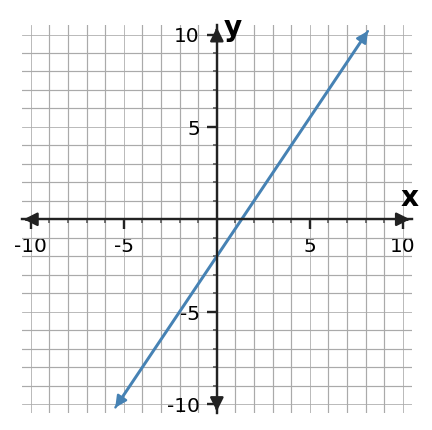
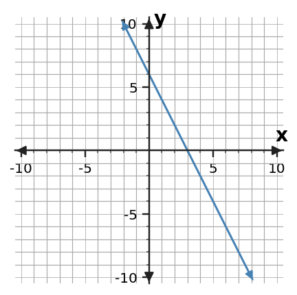

Algebra 1 · 1.3 Function Families · Extra Practice
1. Classify the family suggested by the table and name the numerical feature you used.
| x | y |
|---|---|
| 0 | 3 |
| 1 | 7 |
| 2 | 11 |
| 3 | 15 |
2. The first differences of a table are 3, 5, 7, 9. Which family is suggested by the pattern? Explain what you would check next before being certain.
3. A population starts at 200 and doubles each hour. Identify the function family and explain why a constant additive rate would not fit the description.
4. For y = |x - 2| + 1, predict the general graph shape and state the x-value where the turn occurs. No detailed graph is required.
5. A student calls the table quadratic only because its outputs increase quickly. The outputs are 5, 15, 45, 135 for consecutive inputs. Diagnose the classification and cite the stronger pattern evidence.
| x | y |
|---|---|
| 0 | 5 |
| 1 | 15 |
| 2 | 45 |
| 3 | 135 |
6. A rule is y = (x + 1)² - 4. Name the likely family and describe one graph feature and one table feature that could support your classification.
7. Build a four-row table that could represent an absolute-value family with its smallest output at x = 1. Then explain the symmetry you intentionally created.
| x | y |
|---|---|
| -1 | |
| 0 | |
| 1 | |
| 2 |
8. Two family candidates are linear and exponential. Describe a short table test that distinguishes constant differences from constant ratios.
9. Relationship A is y = 2x + 9. Relationship B is represented by the table. Compare their rates and starting values, then decide which grows faster.
| x | B y |
|---|---|
| 0 | 3 |
| 2 | 11 |
| 4 | 19 |
10. A streaming plan starts at $25 and adds $4 each month. Another plan follows C = 6m + 7. Compare which starts higher and which grows faster.
11. At x = 0, A has output 12 and B has output -3. Both have slope 5. Explain what this tells you about their graphs and whether either will catch the other.
12. Use the points (1, 8) and (5, 20) to find the rate for Relationship A. Relationship B has rate 2.5. Which rate is larger?
13. A table decreases by 6 in y whenever x increases by 2. An equation has slope -4. Convert the table change to a per-1 rate before comparing the relationships.
14. Relationship A begins lower than B but has a larger positive rate. Explain why “which is greater?” cannot be answered without specifying an input.
15. A and B have the same y-intercept. A has slope -1 and B has slope 3. Compare the outputs for positive x without calculating a particular point.
16. Write two quantities you would place on a common comparison table when one relationship is given by a context and the other by an equation.
17. A student uses the graphed points (-2, -5) and (2, 1) but writes rise/run as (1 - (-5))/(-2 - 2). Diagnose the inconsistent point order and give the correct slope.

18. Find the slope of the descending line shown, then describe the change in y for every +1 in x.

19. A student says the slope of the table is -9 because y changes by -9 between the first two rows. Explain why Δx must also be used and find the correct slope.
| x | y |
|---|---|
| 1 | 14 |
| 4 | 5 |
| 7 | -4 |
20. Find the slope from the uneven-step table and verify the result using a different pair of rows.
| x | y |
|---|---|
| -3 | 10 |
| 1 | 2 |
| 6 | -8 |
21. The equation 4x + 2y = 18 is not written in slope-intercept form. Rewrite only as much as needed to identify the slope.
22. A student says the slope in y = -3x + 11 is 11 because it is the standalone number. Diagnose the confusion and identify both the slope and y-intercept.
23. A tank begins with 90 L and loses 7 L each minute. State the rate of change with units and explain what the negative sign means.
24. A taxi model is C = 2.5m + 6. A student says the rate is $6 per mile. Correct the statement and explain what both numbers mean.